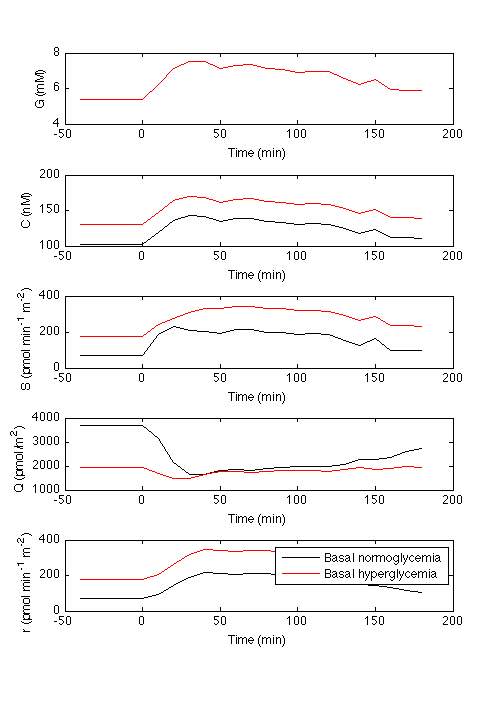
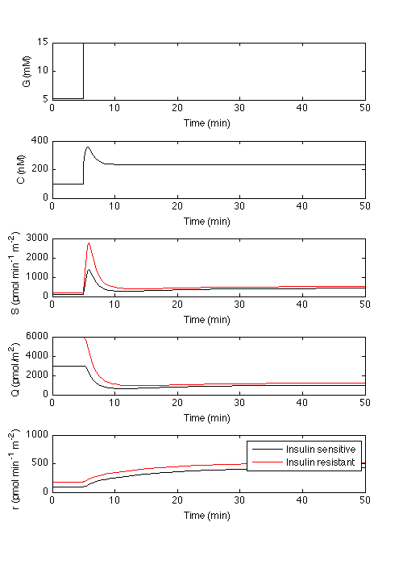

Code for the beta-cell insulin secretion model reproducing in vitro and in vivo conditions
Contents
- Parameters initialization
- IN VITRO CONDITIONS
- - Experiment A: Glucose and calcium decoupling
- - Experiment B: Hyperglycemic clamp
- - Experiment C: Glucose staircase
- - Potentiation
- IN VIVO CONDITIONS
- - Stepped hyperglycemic clamp (Panel A)
- - IVGTT (Panel B left)
- - IVGTT T2D (Panel B right)
- - OGTT-like (Panel C left)
- - OGTT-like T2D (Panel C right)
- - Ramp glucose (Panel D left)
- - Ramp glucose T2D (Panel D right)
- - Glucose hyperglycaemic clamp (Panel E left)
- - Glucose hyperglycaemic clamp T2D (Panel E right)
- - Loss of 1st phase secretion with fasting hyperglicemia - glucose clamp
- - Loss of 1st phase secretion with fasting hyperglicemia - OGTT-like
- - Augmented AIR in insulin resistance with augmented basal secretion
- - Glucose hyperglycaemic clamp calcium peak vs no calcium peak
- - Dose response NGT vs T2D - parameters of glucose ramp
addpath(genpath('model_functions'))
Parameters initialization
The parameters are the result of the fit to the experimental data (see below for the list of publications).
Each dataset (related to a specific experimental condition) and the corresponding reference parameter vector are saved in a different file .mat. Some parameters were enforced to be equal across experiments and/or conditions during the fitting (see paper).
% par of the experiments in vitro % Henquin_2002--> glucose and calcium decoupling % Henquin_2006--> hyperglycemic clamp % Jonkers_2001--> stepped hyperglycemic clamp % par of the experiments on vivo - normal glucose tolerant subjects % Toschi_2002_NGT--> stepped hyperglycemic clamp % Mari_1998_NGT--> IVGTT % Muscelli_2006_NGT--> OGTT % Seghieri_2016_NGT--> glucose ramp % Mychaliszin_2014_NGT--> hyperglycemic clamp % par of the experiments on vivo - type 2 diabetes subjects % Mari_1998_T2D--> IVGTT % Muscelli_2006_T2D--> OGTT % Seghieri_2016_T2D--> glucose ramp % Mychaliszin_2014_T2D--> hyperglycemic clamp % Each element of the p vector correspond to a parameter in the equations % of the article: % p(1)--> p6 in the equation of the article % p(2)--> p7 in the equation of the article % p(3)--> p8 in the equation of the article % p(4)--> p9 in the equation of the article % p(5)--> p10 in the equation of the article % p(6)--> p11 in the equation of the article % p(7)--> Parameter not used % p(8)--> p5 in the equation of the article % p(9)--> p1 in the equation of the article % p(10)--> p2 in the equation of the article % p(11)--> p3 in the equation of the article % p(12)--> p4 in the equation of the article % p(13)--> p15 in the equation of the article % p(14)--> p14 in the equation of the article % p(15)--> p12 in the equation of the article % p(16)--> p13 in the equation of the article % p(17)--> p21 in the equation of the article % p(18)--> p22 in the equation of the article % p(19)--> p23 in the equation of the article % p(20)--> p24 in the equation of the article % p(21)--> p16 in the equation of the article % p(22)--> p17 in the equation of the article % p(23)--> p18 in the equation of the article % The vector p_peak is held fixed % p_peak(1)--> p19 in the equation of the article % p_peak(2)--> p20 in the equation of the article
IN VITRO CONDITIONS
In vitro data sources:
- Experiment A: Simulation of glucose and calcium decoupling. Fig. 4 J-C Henquin et al., Diabetes, 2002
- Experiment B: Hyperglycemic clamp. Fig. 3 J-C Henquin et al., Diabetes, 2006.
- Experiment C: Stepped hyperglycemic clamp. Fig. 7 J.C. Jonkers et al., Diabetes, 2001.
- Experiment A: Glucose and calcium decoupling
load Henquin_2002 % load Henquin 2002 data (four data series) p=loadpar('Henquin_2002'); % reference parameters % Simulate secretion secmod=secsim(p,ca(1),glu(1),p,ca(2),glu(2),p,ca(3),glu(3),p,ca(4),glu(4)); % calculates the model output % Plot data S vs model S (Fig. 3A and S2 article) set(gcf,'position', [300 250 500 400]) for k=1:4 subplot(2,2,k) plot(sec(k).t,sec(k).v,'k',secmod(k).t,secmod(k).v,'r') ylabel('S (pg islet^{-1} min^{-1})') xlabel('Time (min)') legend('Data','Model') end
- Experiment B: Hyperglycemic clamp
clear all %#ok<*CLALL> load Henquin_2006 % load Henquin 2006 data (four data series) [p,p_peak]=loadpar('Henquin_2006'); % reference parameters % Simulate secretion secmod=secsim(p,ca(1),glu(1),p,ca(2),glu(2),p,ca(3),glu(3)); % Plot data glucose (Fig. 3B article) clf set(gcf,'position', [250 250 500 550]) for k=1:3 subplot(3,1,k) plot(glu(k).t, glu(k).v,'k') ylabel('G (mM)') end % Plot data calcium (Fig. 3B article) clf for k=1:3 subplot(3,1,k) plot(ca(k).t, ca(k).v,'k') xlabel('Time (min)') ylabel('C (nM)') end % Plot data secretion vs model secretion (Fig. 3B article) clf for k=1:3 subplot(3,1,k) plot(sec(k).t,sec(k).v,'k',secmod(k).t,secmod(k).v,'r') ylabel('S (% of content per min)') xlabel('Time (min)') legend('Data','Model') end
Plot data calcium vs model calcium (Fig. 5 article)
% Simulate calcium pca=[p_peak;p(17:23)]; % calcium parameter camod=struct('t',{},'v',{}); for k=1:3 camod(k)=casim(glu(k),pca); end clf for k=1:3 subplot(3,1,k) plot(ca(k).t-0.6,ca(k).v,'k',camod(k).t,camod(k).v,'r') % Time shift of 0.6 min to align calcium data with calcium simulated ylabel('C (nM)') xlabel('Time (min)') legend('Data','Model') end
Plot calcium and secretion ca peak vs calcium no ca peak (Figure S9 article)
% Simulate calcium without intial peak pg2c=p(21:23); % calcium parameter camod_nopeak=struct('t',{},'v',{}); for k=1:3 camod_nopeak(k).v=glu2ca(pg2c,glu(k).v); camod_nopeak(k).t=glu(k).t; end % Simulate secretion with Ca initial peak secmod_peak=secsim(p,camod(1),glu(1),p,camod(2),glu(2),p,camod(3),glu(3)); % Simulate secretion without Ca initial peak secmod_nopeak=secsim(p,camod_nopeak(1),glu(1),p,camod_nopeak(2),glu(2),p,camod_nopeak(3),glu(3)); % Plot calcium clf for k=1:3 subplot(3,1,k) plot(camod(k).t,camod(k).v,'k',camod_nopeak(k).t,camod_nopeak(k).v,'r') ylabel('C (nM)') xlabel('Time (min)') legend('Model Ca peak','Model no Ca peak') end % Plot secretion clf for k=1:3 subplot(3,1,k) plot(secmod_peak(k).t,secmod_peak(k).v,'k',secmod_nopeak(k).t,secmod_nopeak(k).v,'r') ylabel('S (% of content per min)') xlabel('Time (min)') legend('Model Ca peak','Model no Ca peak') end
- Experiment C: Glucose staircase
clear all load Jonkers_2001 % Data from figure 7 Jonkers et al. 2001 p=loadpar('Jonkers_2001'); % reference parameter % Simulate secretion secmod=secsim(p,ca,glu); % Plot data glucose (Fig. 3C article) clf subplot(3,1,1) plot(glu.t,glu.v,'k') xlabel('Time(min)') ylabel('G (mM)') % Plot data calcium (Fig. 3C article) subplot(3,1,2) plot(ca.t,ca.v,'k') xlabel('Time (min)') ylabel('C (nM)') % Plot data secretion vs model secretion (Fig. 3C article) subplot(3,1,3) plot(sec.t,sec.v,'k',secmod.t,secmod.v,'r') ylabel('S (pg/min)') xlabel('Time (min)') legend('Data','Model')
- Potentiation
clear all [p,p_peak]=loadpar('Henquin_2006'); % reference parameters % set glucose glu.t=0:110; glu.v=[8.5*ones(1,10) 16.7*ones(1,61) 8.5*ones(1,10) 16.7*ones(1,30)]; % Calculate calcium from glucose pca=[p_peak;p(17:23)]; % calcium parameter camod=casim(glu,pca); % Simulate secretion [secmod, irp,r]=secsim(p,camod,glu); % Plot glucose clf set(gcf,'position', [250 250 500 800]) subplot(5,1,1) plot(glu.t,glu.v,'k') xlabel('Time(min)') ylabel('G (mM)') % Plot calcium subplot(5,1,2) plot(camod.t,camod.v,'k') xlabel('Time (min)') ylabel('C (nM)') % Plot secretion subplot(5,1,3) plot(secmod.t,secmod.v,'k') ylabel('S (% of content per min)') xlabel('Time (min)') % Plot Immediately releasable pool subplot(5,1,4) plot(irp.t, irp.v,'k') xlabel('Time (min)') ylabel('Q (pmol/m^{2})') xlabel('Time (min)') % Plot refilling subplot(5,1,5) plot(r(1).t, r(1).v,'k') xlabel('Time (min)') ylabel('r (pmol min^{-1} m^{-2})') xlabel('Time (min)')
IN VIVO CONDITIONS
Calcium concentrations in vivo are not available experimentally. As described in the paper, the C(G) relationship is implemented in the `casim()` function.
In vivo data source:
- Stepped hyperglycemic clamp: Toschi et al., 2002
- IVGTT: Fig 3 Mari A., Diabetologia, 1998
- OGTT-like: Fig. 3 Muscelli E. et al, Am. J. Physiol. Endocrinol. Metab., 2006
- Glucose ramp: Seghieri et al., Am. J. Physiol. Endocrinol. Metab., 2016
- Hyperglycemic clamp: Mychaliszin et al., Diabetes, 2014
- Stepped hyperglycemic clamp (Panel A)
Data from Toschi et al., 2002
clear all % load data load Toschi_2002_NGT [p,p_peak]=loadpar('Toschi_2002_NGT'); % reference parameters BSA=2.1605; % body surface calculated from data % Calculate calcium from glucose pca=[p_peak;p(17:23)]; % calcium parameter camod=casim(glu,pca); % Simulate secretion secmod=secsim(p,camod,glu); % Plot glucose, calcium, secretion clf set(gcf,'position', [250 250 500 550]) subplot(3,1,1) plot(glu.t,glu.v,'k') setAxes(-5, 90, 4, '', 0, 20, 5, 'G (mmol/L)') % generate the figure with the proper layout subplot(3,1,2) plot(camod.t,camod.v,'k') setAxes(-5, 90, 4, '', 0, 400, 3, 'C (nmol/L)') % generate the figure with the proper layout subplot(3,1,3) plot(sec.t,sec.v/BSA,'k',secmod.t,secmod.v/BSA,'r') % data and model secretion need to be normalized to body surface setAxes(-5, 90, 4, 'Time (min)', 0, 600, 3, 'S (pmol min^{-1}m^{-2})') % generate the figure with the proper layout % saveas_ifsvg(gcf,'svg_human_all_test/panel_A.svg')
Warning: When delay time is set to zero, the transport delay block 'betavars/delayC' is automatically set to support direct feedthrough. This may cause an algebraic loop. A Memory Block can be used in place of the Transport Delay to break the loop
- IVGTT (Panel B left)
Data from Mari, 1998
clear all % load data load Mari_1998_NGT [p,p_peak]=loadpar('Mari_1998_NGT'); % reference parameters BSA=1.8647; % body surface calculated from data % Calculate calcium from glucose pca=[p_peak;p(17:23)]; % calcium parameter camod=casim(glu,pca); % Simulate secretion secmod=secsim(p,camod,glu); % Plot glucose, calcium, secretion clf subplot(3,1,1) plot(glu.t,glu.v,'k') setAxes(-5, 90, 4, '', 0, 30, 4, 'G (mmol/L)') % generate the figure with the proper layout subplot(3,1,2) plot(camod.t,camod.v,'k') setAxes(-5, 90, 4, '', 0, 600, 4, 'C (nmol/L)') % generate the figure with the proper layout subplot(3,1,3) plot(sec.t,sec.v,'k',secmod.t,secmod.v/BSA,'r') % model secretion needs to be normalized to body surface setAxes(-5, 90, 4, 'Time (min)', 0, 2000, 3, 'S (pmol min^{-1}m^{-2})') % generate the figure with the proper layout % saveas_ifsvg(gcf,'svg_human_all_test/panel_A.svg')
Warning: When delay time is set to zero, the transport delay block 'betavars/delayC' is automatically set to support direct feedthrough. This may cause an algebraic loop. A Memory Block can be used in place of the Transport Delay to break the loop
- IVGTT T2D (Panel B right)
Data from Mari, 1998
clear all % load data load Mari_1998_T2D [p,p_peak]=loadpar('Mari_1998_T2D'); % reference parameters BSA=1.9801; % body surface calculated from data % Calculate calcium from glucose pca=[p_peak;p(17:23)]; % calcium parameter camod=casim(glu,pca); % Simulate secretion secmod=secsim(p,camod,glu); % Plot glucose, calcium, secretion clf subplot(3,1,1) plot(glu.t,glu.v,'k') setAxes(-5, 90, 4, '', 0, 30, 4, 'G (mmol/L)') % generate the figure with the proper layout subplot(3,1,2) plot(camod.t,camod.v,'k') setAxes(-5, 90, 4, '', 0, 600, 4, 'C (nmol/L)') % generate the figure with the proper layout subplot(3,1,3) plot(sec.t,sec.v,'k',secmod.t,secmod.v/BSA,'r') % model secretion needs to be normalized to body surface setAxes(-5, 90, 4, 'Time (min)', 0, 2000, 3, 'S (pmol min^{-1}m^{-2})') % generate the figure with the proper layout % saveas_ifsvg(gcf,'svg_human_all_test/panel_A.svg')
Warning: When delay time is set to zero, the transport delay block 'betavars/delayC' is automatically set to support direct feedthrough. This may cause an algebraic loop. A Memory Block can be used in place of the Transport Delay to break the loop
- OGTT-like (Panel C left)
Data from Muscelli et al., 2006
clear all % load data load Muscelli_2006_NGT [p,p_peak]=loadpar('Muscelli_2006_NGT'); % reference parameters BSA=1.8956; % body surface calculated from data % Calculate calcium from glucose pca=[p_peak;p(17:23)]; % calcium parameter camod=casim(glu,pca); % Simulate secretion secmod=secsim(p,camod,glu); % Plot glucose, calcium, secretion clf subplot(3,1,1) plot(glu.t,glu.v,'k') setAxes(-5, 180, 7, '', 5, 15, 3, 'G (mmol/L)') % generate the figure with the proper layout subplot(3,1,2) plot(camod.t,camod.v,'k') setAxes(-5, 180, 7, '', 50, 250, 3, 'C (nmol/L)') % generate the figure with the proper layout subplot(3,1,3) plot(sec.t,sec.v,'k',secmod.t,secmod.v/BSA,'r') % model secretion needs to be normalized to body surface setAxes(-5, 180, 7, 'Time (min)', ... 0, 500, 3, 'S (pmol min^{-1}m^{-2})') % generate the figure with the proper layout % saveas_ifsvg(gcf,'svg_human_all_test/panel_A.svg')
Warning: When delay time is set to zero, the transport delay block 'betavars/delayC' is automatically set to support direct feedthrough. This may cause an algebraic loop. A Memory Block can be used in place of the Transport Delay to break the loop
- OGTT-like T2D (Panel C right)
Data from Muscelli et al., 2006
clear all % load data load Muscelli_2006_T2D [p,p_peak]=loadpar('Muscelli_2006_T2D'); % reference parameters BSA=2.265; % body surface calculated from data % Calculate calcium from glucose pca=[p_peak;p(17:23)]; % calcium parameter camod=casim(glu,pca); % Simulate secretion secmod=secsim(p,camod,glu); % Plot glucose, calcium, secretion clf subplot(3,1,1) plot(glu.t,glu.v,'k') setAxes(-5, 180, 7, '', 5, 15, 3, 'G (mmol/L)') % generate the figure with the proper layout subplot(3,1,2) plot(camod.t,camod.v,'k') setAxes(-5, 180, 7, '', 50, 250, 3, 'C (nmol/L)') % generate the figure with the proper layout subplot(3,1,3) plot(sec.t,sec.v,'k',secmod.t,secmod.v/BSA,'r') % model secretion needs to be normalized to body surface setAxes(-5, 180, 7, 'Time (min)', ... 0, 500, 3, 'S (pmol min^{-1}m^{-2})') % generate the figure with the proper layout % saveas_ifsvg(gcf,'svg_human_all_test/panel_A.svg')
Warning: When delay time is set to zero, the transport delay block 'betavars/delayC' is automatically set to support direct feedthrough. This may cause an algebraic loop. A Memory Block can be used in place of the Transport Delay to break the loop
- Ramp glucose (Panel D left)
Data from Seghieri et al., 2016
clear all % load data load Seghieri_2016_NGT [p,p_peak]=loadpar('Seghieri_2016_NGT'); % reference parameters BSA=1.9658; % body surface calculated from data % Calculate calcium from glucose pca=[p_peak;p(17:23)]; % calcium parameter camod=casim(glu,pca); % Simulate secretion secmod=secsim(p,camod,glu); % Plot glucose, calcium, secretion clf subplot(3,1,1) plot(glu.t,glu.v,'k') setAxes(-5, 180, 7, '', 0, 30, 4, 'G (mmol/L)') % generate the figure with the proper layout subplot(3,1,2) plot(camod.t,camod.v,'k') setAxes(-5, 180, 7, '', 0, 300, 4, 'C (nmol/L)') % generate the figure with the proper layout subplot(3,1,3) plot(sec.t,sec.v,'k',secmod.t,secmod.v/BSA,'r') % model secretion needs to be normalized to body surface setAxes(-5, 180, 7, 'Time (min)', 0, 1500, 4, 'S (pmol min^{-1}m^{-2})') % generate the figure with the proper layout % saveas_ifsvg(gcf,'svg_human_all_test/panel_A.svg')
Warning: When delay time is set to zero, the transport delay block 'betavars/delayC' is automatically set to support direct feedthrough. This may cause an algebraic loop. A Memory Block can be used in place of the Transport Delay to break the loop
- Ramp glucose T2D (Panel D right)
Data from Seghieri et al., 2016
clear all % load data load Seghieri_2016_T2D [p,p_peak]=loadpar('Seghieri_2016_T2D'); % reference parameters BSA=2.0766; % body surface calculated from data % Calculate calcium from glucose pca=[p_peak;p(17:23)]; % calcium parameter camod=casim(glu,pca); % Simulate secretion secmod=secsim(p,camod,glu); % Plot glucose, calcium, secretion clf subplot(3,1,1) plot(glu.t,glu.v,'k') setAxes(-5, 180, 7, '', 0, 30, 4, 'G (mmol/L)') % generate the figure with the proper layout subplot(3,1,2) plot(camod.t,camod.v,'k') setAxes(-5, 180, 7, '', 0, 300, 4, 'C (nmol/L)') % generate the figure with the proper layout subplot(3,1,3) plot(sec.t,sec.v,'k',secmod.t,secmod.v/BSA,'r') % model secretion needs to be normalized to body surface setAxes(-5, 180, 7, 'Time (min)', 0, 1500, 4, 'S (pmol min^{-1}m^{-2})') % generate the figure with the proper layout % saveas_ifsvg(gcf,'svg_human_all_test/panel_A.svg')
Warning: When delay time is set to zero, the transport delay block 'betavars/delayC' is automatically set to support direct feedthrough. This may cause an algebraic loop. A Memory Block can be used in place of the Transport Delay to break the loop
- Glucose hyperglycaemic clamp (Panel E left)
Data from Mychaliszin et al., 2014
% load data load Mychaliszin_2014_NGT [p,p_peak]=loadpar('Mychaliszin_2014_NGT'); % reference parameters BSA=2.1327; % body surface calculated from data % Calculate calcium from glucose pca=[p_peak;p(17:23)]; % calcium parameter camod=casim(glu,pca); % Simulate secretion secmod=secsim(p,camod,glu); % Plot glucose, calcium, secretion clf subplot(3,1,1) plot(glu.t,glu.v,'k') setAxes(-5, 120, 5, '', 0, 15, 4, 'G (mmol/L)') % generate the figure with the proper layout subplot(3,1,2) plot(camod.t,camod.v,'k') setAxes(-5, 120, 5, '', 0, 400, 3, 'C (nmol/L)') % generate the figure with the proper layout subplot(3,1,3) plot(sec.t,sec.v/BSA,'k',secmod.t,secmod.v/BSA,'r') % data and model secretion need to be normalized to body surface setAxes(-5, 120, 5, 'Time (min)', 0, 6000, 4, 'S (pmol min^{-1}m^{-2})') % generate the figure with the proper layout % saveas_ifsvg(gcf,'svg_human_all_test/panel_A.svg')
Warning: When delay time is set to zero, the transport delay block 'betavars/delayC' is automatically set to support direct feedthrough. This may cause an algebraic loop. A Memory Block can be used in place of the Transport Delay to break the loop
- Glucose hyperglycaemic clamp T2D (Panel E right)
Data from Mychaliszin et al., 2014
clear all % load data load Mychaliszin_2014_T2D [p,p_peak]=loadpar('Mychaliszin_2014_T2D'); % reference parameters BSA=2.2283; % body surface calculated from data % Calculate calcium from glucose pca=[p_peak;p(17:23)]; % calcium parameter camod=casim(glu,pca); % Simulate secretion secmod=secsim(p,camod,glu); % Plot glucose, calcium, secretion clf subplot(3,1,1) plot(glu.t,glu.v,'k') setAxes(-5, 120, 5, '', 0, 15, 4, 'G (mmol/L)') % generate the figure with the proper layout subplot(3,1,2) plot(camod.t,camod.v,'k') setAxes(-5, 120, 5, '', 0, 400, 3, 'C (nmol/L)') % generate the figure with the proper layout subplot(3,1,3) plot(sec.t,sec.v/BSA,'k',secmod.t,secmod.v/BSA,'r') % data and model secretion need to be normalized to body surface setAxes(-5, 120, 5, 'Time (min)', 0, 6000, 4, 'S (pmol min^{-1}m^{-2})') % generate the figure with the proper layout % saveas_ifsvg(gcf,'svg_human_all_test/panel_A.svg')
Warning: When delay time is set to zero, the transport delay block 'betavars/delayC' is automatically set to support direct feedthrough. This may cause an algebraic loop. A Memory Block can be used in place of the Transport Delay to break the loop
- Loss of 1st phase secretion with fasting hyperglicemia - glucose clamp
clear all glu(1).t=[0:1:5 5.02:0.2:6 6:0.5:50]; glu(1).v=[5.27*ones(1,6) 15*ones(1,94)]; % basal normoglycemia glu(2).t=[0:1:5 5.02:0.2:6 6:0.5:50]; glu(2).v=[7*ones(1,6) 15*ones(1,94)]; % baal hyperglycemia [p,p_peak]=loadpar('Toschi_2002_NGT'); % reference parameters BSA=2; % body surface % Calculate calcium pca=[p_peak;p(17:23)]; % calcium parameter camod=struct('t',{},'v',{}); for k=1:2 camod(k)=casim(glu(k),pca); end % Simulate secretion [secmod, irp,r]=secsim(p,camod(1),glu(1),p,camod(2),glu(2)); % Plot - Fig. S4 article % Plot glucose clf set(gcf,'position', [250 250 500 800]) subplot(5,1,1) plot(glu(1).t, glu(1).v,'k',glu(1).t, glu(1).v,'r') xlabel('Time (min)') ylabel('G (mM)') % Plot calcium subplot(5,1,2) plot(camod(1).t, camod(1).v,'k',camod(2).t, camod(2).v,'r') xlabel('Time (min)') ylabel('C (nM)') % Plot secretion subplot(5,1,3) plot(secmod(1).t, secmod(1).v/BSA,'k',secmod(2).t, secmod(2).v/BSA,'r') % model secretion needs to be normalized for body surface xlabel('Time (min)') ylabel('S (pmol min^{-1} m^{-2})') xlabel('Time (min)') % Plot Immediately releasable pool subplot(5,1,4) plot(irp(1).t, irp(1).v/BSA,'k',irp(2).t, irp(2).v/BSA,'r') % model secretion needs to be normalized for body surface xlabel('Time (min)') ylabel('Q (pmol/m^{2})') xlabel('Time (min)') % Plot refilling subplot(5,1,5) plot(r(1).t, r(1).v/BSA,'k',r(2).t, r(2).v/BSA,'r') % model secretion needs to be normalized for body surface xlabel('Time (min)') ylabel('r (pmol min^{-1} m^{-2})') xlabel('Time (min)') legend('Basal normoglycemia','Basal hyperglycemia')
Warning: When delay time is set to zero, the transport delay block 'betavars/delayC' is automatically set to support direct feedthrough. This may cause an algebraic loop. A Memory Block can be used in place of the Transport Delay to break the loop Warning: When delay time is set to zero, the transport delay block 'betavars/delayC' is automatically set to support direct feedthrough. This may cause an algebraic loop. A Memory Block can be used in place of the Transport Delay to break the loop
- Loss of 1st phase secretion with fasting hyperglicemia - OGTT-like
clear all load Muscelli_2006_NGT % load glucose data [p,p_peak]=loadpar('Muscelli_2006_NGT'); % glucose input glu(1).t=glu.t; % normal glucose tolerant subject glu(1).v=glu.v; glu(2).t=glu(1).t; % hyperglycemic subject glu(2).v=glu(1).v+1.5; BSA=2; % body surface % Calculate calcium pca=[p_peak;p(17:23)]; % calcium parameter camod=struct('t',{},'v',{}); for k=1:2 camod(k)=casim(glu(k),pca); end % Simulate secretion [secmod, irp,r]=secsim(p,camod(1),glu(1),p,camod(2),glu(2)); % Plot - Fig. S8 article % Plot glucose clf subplot(5,1,1) plot(glu(1).t, glu(1).v,'k',glu(1).t, glu(1).v,'r') xlabel('Time (min)') ylabel('G (mM)') % Plot calcium subplot(5,1,2) plot(camod(1).t, camod(1).v,'k',camod(2).t, camod(2).v,'r') xlabel('Time (min)') ylabel('C (nM)') % Plot secretion subplot(5,1,3) plot(secmod(1).t, secmod(1).v/BSA,'k',secmod(2).t, secmod(2).v/BSA,'r') % model secretion needs to be normalized for body surface xlabel('Time (min)') ylabel('S (pmol min^{-1} m^{-2})') xlabel('Time (min)') % Plot Immediately releasable pool subplot(5,1,4) plot(irp(1).t, irp(1).v/BSA,'k',irp(2).t, irp(2).v/BSA,'r') % model secretion needs to be normalized for body surface xlabel('Time (min)') ylabel('Q (pmol/m^{2})') xlabel('Time (min)') % Plot refilling subplot(5,1,5) plot(r(1).t, r(1).v/BSA,'k',r(2).t, r(2).v/BSA,'r') % model secretion needs to be normalized for body surface xlabel('Time (min)') ylabel('r (pmol min^{-1} m^{-2})') xlabel('Time (min)') legend('Basal normoglycemia','Basal hyperglycemia')
Warning: When delay time is set to zero, the transport delay block 'betavars/delayC' is automatically set to support direct feedthrough. This may cause an algebraic loop. A Memory Block can be used in place of the Transport Delay to break the loop Warning: When delay time is set to zero, the transport delay block 'betavars/delayC' is automatically set to support direct feedthrough. This may cause an algebraic loop. A Memory Block can be used in place of the Transport Delay to break the loop
- Augmented AIR in insulin resistance with augmented basal secretion
clear all [p,p_peak]=loadpar('Toschi_2002_NGT'); % reference parameters p_insres=p; p_insres(8)=2*p(8); % augmented basal secretion in insulin resistance % set glucose glu.t=[0:1:5 5.02:0.2:6 6:0.5:50]; glu.v=[5.27*ones(1,6) 15*ones(1,94)]; BSA=2; % body surface % Calculate calcium pca=[p_peak;p(17:23)]; % calcium parameter camod=casim(glu,pca); % Simulate secretion [secmod, irp,r]=secsim(p,camod,glu,p_insres,camod,glu); % Plot - Fig. S7 article % Plot glucose clf subplot(5,1,1) plot(glu.t, glu.v,'k') xlabel('Time (min)') ylabel('G (mM)') % Plot calcium subplot(5,1,2) plot(camod.t, camod.v,'k') xlabel('Time (min)') ylabel('C (nM)') % Plot secretion subplot(5,1,3) plot(secmod(1).t, secmod(1).v/BSA,'k',secmod(2).t, secmod(2).v/BSA,'r') % model secretion needs to be normalized for body surface xlabel('Time (min)') ylabel('S (pmol min^{-1} m^{-2})') xlabel('Time (min)') % Plot Immediately releasable pool subplot(5,1,4) plot(irp(1).t, irp(1).v/BSA,'k',irp(2).t, irp(2).v/BSA,'r') % model secretion needs to be normalized for body surface xlabel('Time (min)') ylabel('Q (pmol/m^{2})') xlabel('Time (min)') % Plot refilling subplot(5,1,5) plot(r(1).t, r(1).v/BSA,'k',r(2).t, r(2).v/BSA,'r') % model secretion needs to be normalized for body surface xlabel('Time (min)') ylabel('r (pmol min^{-1} m^{-2})') xlabel('Time (min)') legend('Insulin sensitivity','Insulin resistance')
Warning: When delay time is set to zero, the transport delay block 'betavars/delayC' is automatically set to support direct feedthrough. This may cause an algebraic loop. A Memory Block can be used in place of the Transport Delay to break the loop Warning: When delay time is set to zero, the transport delay block 'betavars/delayC' is automatically set to support direct feedthrough. This may cause an algebraic loop. A Memory Block can be used in place of the Transport Delay to break the loop
- Glucose hyperglycaemic clamp calcium peak vs no calcium peak
clear all [p,p_peak]=loadpar('Toschi_2002_NGT'); % reference parameters % set glucose glu.t=[0:1:5 5.02:0.2:6 6:0.5:50]; glu.v=[5.27*ones(1,6) 15*ones(1,94)]; BSA=2; % body surface % Calculate calcium with inital peak pca=[p_peak;p(17:23)]; % calcium parameter camod=struct('t',{},'v',{}); camod(1)=casim(glu,pca); % Calculate calcium without inital peak pg2c=p(21:23); % calcium parameter no peak camod(2).v=glu2ca(pg2c,glu.v); camod(2).t=glu.t; % Simulate secretion secmod=secsim(p,camod(1),glu,p,camod(2),glu); % Plot - Fig. S9 article % Plot glucose clf set(gcf,'position', [250 250 500 550]) subplot(3,1,1) plot(glu.t, glu.v,'k') xlabel('Time (min)') ylabel('G (mM)') % Plot calcium subplot(3,1,2) plot(camod(1).t, camod(1).v,'k',camod(2).t, camod(2).v,'r') xlabel('Time (min)') ylabel('C (nM)') legend('Ca model with peak','Ca model without peak') % Plot secretion subplot(3,1,3) plot(secmod(1).t, secmod(1).v/BSA,'k',secmod(2).t, secmod(2).v/BSA,'r') % model secretion needs to be normalized for body surface xlabel('Time (min)') ylabel('S (pmol min^{-1} m^{-2})') xlabel('Time (min)') legend('Ca model with peak','Ca model without peak')
Warning: When delay time is set to zero, the transport delay block 'betavars/delayC' is automatically set to support direct feedthrough. This may cause an algebraic loop. A Memory Block can be used in place of the Transport Delay to break the loop Warning: When delay time is set to zero, the transport delay block 'betavars/delayC' is automatically set to support direct feedthrough. This may cause an algebraic loop. A Memory Block can be used in place of the Transport Delay to break the loop
- Dose response NGT vs T2D - parameters of glucose ramp
clear all [p_ramp,p_peak]=loadpar('Seghieri_2016_NGT'); % reference parameters NGT p_ramp_d=loadpar('Seghieri_2016_T2D'); % reference parameters T2D BSA=2; % body surface glu=0:30; ca=50:300; gluref=20; caref=200; % Plot - Figure 7 of the article clf set(gcf,'position', [250 250 500 400]) subplot(2,2,1) plot(ca,fCa(p_ramp,ca),'k',ca,fCa(p_ramp_d,ca),'r') xlabel('C (nM)') ylabel('f_k (1/min)') legend('NGT','T2D') subplot(2,2,2) plot(ca,fCaGlu(p_ramp,ca,gluref)/BSA,'k',ca,fCaGlu(p_ramp_d,ca,gluref)/BSA,'r') % /BSA to normalize for body surface xlabel('C (nM)') ylabel('f_r (pmol min^{-1}m^{-2})') xlim([0 300]) title('G=20 mM') legend('NGT','T2D') subplot(2,2,3) plot(glu,fCaGlu(p_ramp,caref,glu)/BSA,'k',glu,fCaGlu(p_ramp_d,caref,glu)/BSA,'r') % /BSA to normalize for body surface xlabel('G (mM)') ylabel('f_r (pmol min^{-1}m^{-2})') xlim([0 30]) title('C=200 nM') legend('NGT','T2D')